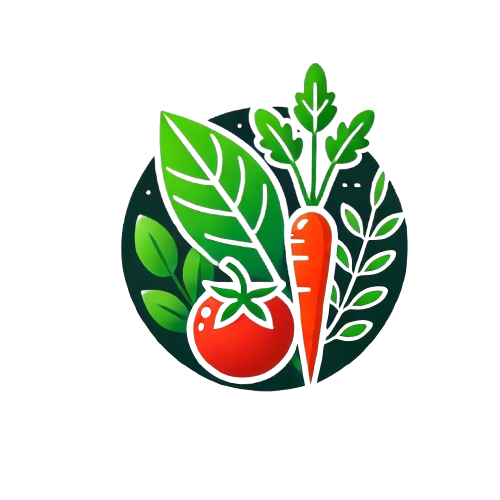

Estabelecimentos:
Conheça alguns dos nossos vendedores:
Da Terra
A "Da Terra" é uma marca comprometida com a saúde e a sustentabilidade, oferecendo produtos in natura , cultivados sem o uso de agrotóxicos. Focada na pureza e na qualidade, a "Da Terra" conecta o consumidor diretamente à natureza, promovendo uma alimentação saudável e um estilo de vida consciente.

Vida Pura
A Vida Pura oferece produtos In Natura, livres de agrotóxicos, promovendo saúde e bem-estar. Com foco na pureza e no frescor, a marca conecta você à natureza, garantindo alimentos de qualidade, cultivados com respeito ao meio ambiente.
BotaniCare
Desvende a beleza da natureza em cada produto. Nossa linha completa de cosméticos naturais oferece soluções eficazes para todos os tipos de pele, sem comprometer a saúde e o bem-estar.